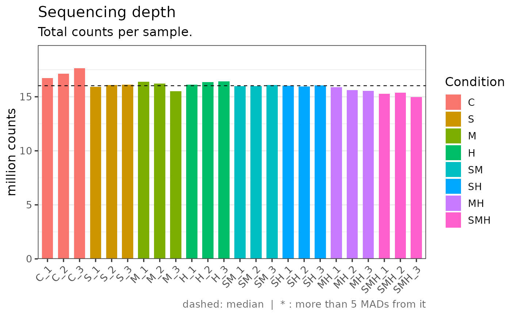

Total counts per sample. A library that stands far from the others cannot be compared to them, in either direction : too few reads and its gene counts are mostly noise, too many and the excess usually belongs to a handful of genes rather than to the whole transcriptome.
Normalisation does not equalise depth, it corrects composition, so this plot
says the same thing before and after it. See
draw_normalisation_factors for what normalisation does change.
draw_sequencing_depth(
data,
conds = unique(stringr::str_split_fixed(colnames(data), "_", 2)[, 1]),
k = 5,
delta = 0.05,
palette = getOption("DIANE.palette", "ggplot")
)a matrix of raw counts, samples as columns.
conditions to keep. Default : all of them.
number of median absolute deviations from the median beyond which a sample is flagged.
minimal deviation from the median, as a fraction of it. A sample must exceed both thresholds to be flagged.
categorical palette : "ggplot", "diane", "okabe", "npg", "aaas", "lancet" or "nejm". Defaults to getOption("DIANE.palette"), else "ggplot".
a ggplot object
data("abiotic_stresses")
draw_sequencing_depth(abiotic_stresses$raw_counts)
